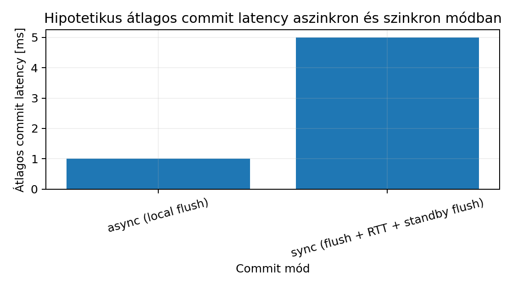

Az állapotmentes (stateless) szolgáltatás újraindításakor csak a processznek kell elindulnia. Egy adatbázist (database, DB) tartalmazó szolgáltatásnál a tartós állapotot a hibás lemez, a hibás host vagy a rosszul sikerült sémaváltozás után is garantálni kell. A replikáció (replication) és a helyreállítási terv (recovery plan) nem backend-részlet, hanem a szolgáltatás rendelkezésre állási és adatvesztési szerződésének alapja. Ez az alfejezet a primary/replica modellt, a WAL-archiválást, a failovert, a PITR-t és ezek RPO/RTO hatásait mutatja be PostgreSQL fogalmi példán, de nem állít aktuális verziókövetést. A parancsok izolált labVM-eken futnak; éles környezethez a support szintaxist ellenőrizni kell.
Definíció (primary/replica és lag): A primary (más
néven master) fogad írási tranzakciókat, a replica (standby) másolja
azokat, és olvasási lekérdezéseket szolgálhat ki. A PostgreSQL a
módosításokat write-ahead logba (WAL) írja, majd a replica folyamatosan
streameli ezt a logfolyamot, és visszajátssza. A replication
lag az az idő, amennyivel a replica lemarad a primary mögött;
mérhető bájtban
(pg_wal_lsn_diff(pg_current_wal_lsn(), replay_lsn); az LSN,
Log Sequence Number a WAL-folyam bájtpozíciója, nem tranzakciószám) vagy
időben (replay_lag). Ugyanezt a logfolyamot lehet
archiválni is, így a régebbi állapotok helyreállíthatók.
A synchronous (szinkron) és asynchronous (aszinkron) commit döntése
közvetlen RPO-tradeoff. Szinkron módban
(synchronous_commit = on) a primary csak akkor jelez
sikeres COMMIT-ot, ha a kijelölt replica megerősítette a WAL tartós
írását (flush). Ekkor a committed adatra RPO = 0, de a commit latency
megnő, és ha a szinkron replica elérhetetlen, a commitok időkorlát
nélkül várnak (nem váltanak hibára). Aszinkron módban azonnali commit,
de a lag alatti adatvesztés lehetséges. A kettő közötti megoldás a
quorum commit:
szinkron jelölt közül bármely
visszaigazolása elég
(synchronous_standby_names = 'ANY 1 (lab_replica1, lab_replica2)').
A commit latencyt a
-adik
leggyorsabb standby határozza meg; az RPO 0 marad, amíg a primary és a
visszaigazoló közül legalább egy tárolója túléli a hibát, a write
availability pedig addig, amíg legalább
standby elérhető.
A failover (átállás) során a replica primaryvá válik, a régi primert le kell állítani vagy el kell szigetelni. A fencing (izolálás) kritikus: ha a régi primary tovább fut, a kliens két írási pontot láthat, és split brain (kettős főnök) alakul ki, amely adatdivergenciához vezet. A fencing megvalósítható storage szinten (a régi primary lemezhozzáférésének elvesztése), hálózati szinten (a régi primary elérése letiltva), vagy cluster manageren keresztül (pl. node leválasztás). A failover után az alkalmazás kapcsolatának is át kell állnia: a client state nem követi automatikusan a DB state-et.
A backup (mentés) lehet logical backup (pl.
pg_dump), amely SQL/dump formátumú, táblánként
visszaállítható, de nagy adatbázisnál lassú. A physical backup
a DB fájlrendszer konzisztens másolata (pl. pg_basebackup),
amelyet WAL-archívummal kombinálva pont az időre visszaállítás
(point-in-time recovery, PITR) érhető el. A PITR feltétele: a base
backup készítésének időpontja, a lezárt WAL-szegmensek tartós archívumba
másolása, és a kívánt visszaállítási pont (például
recovery_target_time). A PITR után a rendszer nem
feltétlenül tartalmazza a későbbi tranzakciókat; ezért a targetet és a
kizárási politikát expliciten kell rögzíteni.
A séma migráció (schema migration) replikált környezetben akkor
biztonságos, ha a változtatás két fázisban bővíthető: először a
kompatibilis bővítést (add nullable column, új tábla, új index) vezetjük
be, az összes régi verzió tovább fut, majd egy későbbi deploy során
távolítjuk el a nem használt régi sémaelemet. A fizikai (streaming)
replikáció és a logikai replikáció itt élesen eltér. Fizikai replikánál
a WAL a blokkszintű adat- és katalógusváltozást együtt viszi: a primaryn
futtatott ALTER TABLE vagy CREATE INDEX külön
standby-DDL nélkül megjelenik a replikán, a standbynek nincs saját „régi
sémája” vagy külön karbantartandó indexkészlete. A kockázat itt a
hot standby query conflict: a primaryn futó
ACCESS EXCLUSIVE zárat igénylő DDL (vagy a VACUUM által
eltávolított sorverzió) visszajátszása ütközhet a replikán futó olvasó
lekérdezéssel, amelyet a standby
max_standby_streaming_delay után megszakít, vagy a replay
lemarad. A régi és új alkalmazásverzió közti kompatibilitás tehát a
kliensek oldaláról számít. Logikai replikációnál
(CREATE PUBLICATION/SUBSCRIPTION) viszont a
DDL nem replikálódik: az előfizetőn a sémát külön kell migrálni, és ha a
séma eltér (pl. új NOT NULL oszlop csak az előfizetőn), az
apply hibával megáll. A CREATE INDEX CONCURRENTLY a
primaryn elkerüli a hosszú write lockot; fizikai replikára WAL-lal kerül
át, logikai előfizetőn külön kell létrehozni.
Labtopológia:
| Host | IP | Role |
|---|---|---|
| lab-pg-primary | 10.13.0.10 | primary |
| lab-pg-replica | 10.13.0.11 | standby |
| lab-backup | 10.13.0.20 | WAL-archívum és base backup tár (NFS-export:
/srv/pg-archive) |
| lab-recovery | 10.13.0.12 | PITR-teszt (eldobható) |
Minden PostgreSQL-parancs postgres OS felhasználóval
vagy sudo -u postgres módon fut; a verzió mindenhol
PostgreSQL 16 (Ubuntu 24.04 postgresql-16 csomag, cluster:
16/main). A labhost nevek explicit; a parancsok nem
futtathatók éles környezetben verzióellenőrzés nélkül. A hálózati vagy
VM-szintű fencinghez a labkonzol (hypervisor-hozzáférés) legyen
nyitva.
0. Előkészítés (mindhárom DB-hoston): a
lab-backup /srv/pg-archive exportját mindhárom
PostgreSQL-host ugyanazon az úton csatolja
(/mnt/pg-archive, benne wal/ és
base/ alkönyvtár, tulajdonos a postgres UID),
így a primary, a később promotált replica és a lab-recovery
is ugyanazt az archívumot látja. Ellenőrzés:
sudo -u postgres touch /mnt/pg-archive/wal/.probe mindhárom
hoston sikeres. Kezdés előtt minden VM-ről snapshot készül.
1. Primary konfiguráció (10.13.0.10), először
aszinkron módban:
sudo -u postgres psql \
-c "CREATE ROLE rep WITH REPLICATION LOGIN PASSWORD 'labsecret';"
sudo -u postgres psql -c "ALTER SYSTEM SET wal_level = replica;"
sudo -u postgres psql -c "ALTER SYSTEM SET max_wal_senders = 5;"
sudo -u postgres psql -c "ALTER SYSTEM SET listen_addresses = '*';"
sudo -u postgres psql -c "ALTER SYSTEM SET archive_mode = on;"
sudo -u postgres psql -c "ALTER SYSTEM SET archive_timeout = '60s';"
sudo -u postgres psql -c "ALTER SYSTEM SET archive_command = \
'test ! -f /mnt/pg-archive/wal/%f && cp %p /mnt/pg-archive/wal/%f';"A pg_hba.conf
(/etc/postgresql/16/main/pg_hba.conf) végére a replikációs
és a backup-kapcsolat engedélye kerül, majd újraindítás (a
wal_level, archive_mode és
listen_addresses csak restarttal érvényes):
host replication rep 10.13.0.11/32 scram-sha-256
host replication rep 10.13.0.20/32 scram-sha-256sudo systemctl restart postgresql@16-main
sudo -u postgres psql \
-c "SELECT archived_count, failed_count FROM pg_stat_archiver;"Az archiválást a replica felépítése előtt kapcsoljuk be, így
a pg_basebackup-pal klónozott replica a
postgresql.auto.conf-ban ugyanazt az
archive_mode/archive_command beállítást
örökli. A standby archive_mode = on mellett a promócióig
nem archivál, a promóció után viszont igen (always esetén
standbyként is). Az archive_command nem nulla exit code
esetén a PostgreSQL újrapróbálja a szegmenst, és a
pg_stat_archiver.failed_count nő; ezt kell figyelni. A
synchronous_standby_names ebben a lépésben még üres: amíg
nincs streamelő standby, a szinkron beállítás minden commitot
megakasztana.
2. Replica konfiguráció
(10.13.0.11):
A pg_basebackup üres céladatkönyvtárat vár, ezért előbb
leállítjuk a csomag által létrehozott clustert, és a régi adatkönyvtárat
félretesszük (nem töröljük). A jelszót ~postgres/.pgpass
fájlból adjuk (chmod 600), nem a parancssorból:
pg_lsclusters
sudo systemctl stop postgresql@16-main
sudo mv /var/lib/postgresql/16/main /var/lib/postgresql/16/main.orig
echo '10.13.0.10:5432:replication:rep:labsecret' | \
sudo -u postgres tee /var/lib/postgresql/.pgpass >/dev/null
sudo chmod 600 /var/lib/postgresql/.pgpass
sudo -u postgres pg_basebackup \
-d 'host=10.13.0.10 port=5432 user=rep application_name=lab_replica' \
-D /var/lib/postgresql/16/main -R -X stream -P
sudo systemctl start postgresql@16-mainA -R létrehozza a standby.signal fájlt az
adatkönyvtárban, és a postgresql.auto.conf-ba írja a
primary_conninfo-t (a -d conninfóból, benne az
application_name-mel). PostgreSQL 12 óta nincs
recovery.conf és standby_mode: ha ilyen fájl
van az adatkönyvtárban, a szerver nem indul. Az eredmény a replica
postgresql.auto.conf-jában (a jelszó a
.pgpass-ból jön, a conninfo-ba nem kerül be):
# kivonat: a -R a többi kapcsolati paramétert (port, sslmode stb.) is kiírja
primary_conninfo = 'user=rep host=10.13.0.10 application_name=lab_replica …'Ellenőrzés primary oldalon:
sudo -u postgres psql -c "SELECT application_name, state, sync_state, \
sent_lsn, replay_lsn, replay_lag FROM pg_stat_replication;"Várt kimenet: egy sor, application_name = lab_replica,
state=streaming, sync_state=async,
replay_lag közel nulla. Ha a lag nő, nézd meg a
sync_state oszlopot
(sync/async/quorum), majd a
hálózat és a standby I/O szűkületét; szinkron on módban is
lehet replay lag, mert az on csak a standby-flushre vár, a
visszajátszásra nem.
3. Szinkron mód bekapcsolása, majd a commit latency tradeoff:
Csak a streamelő standby ellenőrzése után kapcsoljuk be a szinkron módot a primaryn (reload elég, restart nem kell):
sudo -u postgres psql \
-c "ALTER SYSTEM SET synchronous_standby_names = 'lab_replica';" \
-c "SELECT pg_reload_conf();"
sudo -u postgres psql \
-c "SELECT application_name, sync_state FROM pg_stat_replication;"Várt kimenet: sync_state = sync. A
synchronous_standby_names a replica
primary_conninfo-beli application_name-ét
azonosítja; a synchronous_commit = on (alapérték) minden
tranzakciónál a szinkron standby flush-visszaigazolására vár. Ez
garantálja, hogy a committed adat a szinkron replikán is megvan; az RPO
committed adatra nulla, ha a primary és a szinkron replica tárolója nem
egyszerre vész el. Visszaút (cancel/failback), ha a standby kiesik vagy
a commitok megakadnak:
ALTER SYSTEM RESET synchronous_standby_names; +
SELECT pg_reload_conf(); — ez tudatos RPO-feladás, amelyet
incidensjegyben rögzítünk.
Vizsgáljuk meg a commit latencyt szinkron és aszinkron módban egy
egyszerű, terheléstől független modellel (telítés alatt). A
synchronous_commit = local csak a helyi WAL-flushre vár, a
standby visszaigazolására nem (replikációs szempontból aszinkron). A
mérés pgbench-et használhat; itt illusztratív számítást
adunk, nem mért adatot.

| Tranzakció/s | Async latency | Sync latency (hipotetikus) |
|---|---|---|
| 5 | 1 ms | 5 ms |
| 10 | 1 ms | 5 ms |
| 50 | 1 ms | 5 ms |
| 100 | 1 ms | 5 ms |
A modell nem tartalmaz telítést: ha a WAL-eszköz vagy a hálózat közel kerül a kapacitásához, mindkét oszlop nő (sorbanállási modellel, pl. , külön kellene számolni). A tanulság: a szinkron commit a committed adat RPO-ját nullára csökkenti, de az átlagos commit latencyt legalább egy standby-körúttal növeli, és a write path függővé válik a standbytől.
4. Backup és PITR:
A WAL-archiválás az 1. lépésben már fut (%p a lezárt WAL
fájl útja, %f a fájlneve). Ellenőrzés a primaryn: a
pg_stat_archiver archived_count értéke nő, a
failed_count nem; a /mnt/pg-archive/wal/ alatt
megjelennek a szegmensek.
Base backup készítése a lab-backup hostról (tar
formátum, a -X stream a backup alatti WAL-t is
mellékeli):
sudo -u postgres pg_basebackup -h 10.13.0.10 -U rep \
-D /srv/pg-archive/base/2025-03-15 -F tar -z -X stream -PA lab-backup hoston is ~postgres/.pgpass
adja a rep jelszavát. Az eredmény a
base.tar.gz és a pg_wal.tar.gz. A PITR-t egy
külön labhoston, a lab-recovery-n (10.13.0.12) teszteljük,
hogy a primaryt ne érintsük. Teljes műveletsor a
lab-recovery-n:
sudo systemctl stop postgresql@16-main
sudo mv /var/lib/postgresql/16/main /var/lib/postgresql/16/main.pre-pitr
sudo -u postgres mkdir -m 700 /var/lib/postgresql/16/main
sudo -u postgres tar -xzf /mnt/pg-archive/base/2025-03-15/base.tar.gz \
-C /var/lib/postgresql/16/main
sudo -u postgres touch /var/lib/postgresql/16/main/recovery.signalA recovery-beállítások a
/etc/postgresql/16/main/conf.d/recovery.conf include-fájlba
kerülnek (a név tetszőleges; ez normál konfigurációs fájl, nem a régi
recovery.conf mechanizmus). Ezen a hoston az
archive_mode = off maradjon, hogy a teszt ne írjon a közös
archívumba:
restore_command = 'cp /mnt/pg-archive/wal/%f %p'
recovery_target_time = '2025-03-15 14:30:00+00'
recovery_target_action = 'pause'
archive_mode = offA célidőt UTC-ben, a commit-időbélyegekkel (now() az
eseménysorban) azonos időzónában add meg; időzóna nélkül a
recovery-szerver timezone beállítása szerint értelmeződik,
és más zónájú VM-en egy órával más pontra állhat meg.
sudo systemctl start postgresql@16-main
sudo -u postgres psql \
-c "SELECT pg_is_in_recovery(), pg_get_wal_replay_pause_state();"
sudo -u postgres psql -d labdb -c "SELECT max(created_at) FROM events;"A pause megállítja a visszajátszást a célidőnél, így
ellenőrizhető az adat. Várt kimenet: pg_is_in_recovery = t,
pg_get_wal_replay_pause_state = paused, a naplóban
recovery stopping before commit ... és
pausing at the end of recovery; az events
legutolsó sora 14:30 előtti, a hibás 14:42-es DELETE hatása
nincs jelen. Ez bizonyítja, hogy a PITR működik; a rendszer ilyenkor
csak olvasható. Ha az adat jó,
SELECT pg_wal_replay_resume(); lezárja a recoveryt, és a
node új timeline-on írhatóvá válik. (A
labdb/events a laborban előre létrehozott
tesztadat; a kimenet szemléltető, nem futtatott.)
Az alábbi ábra a PITR elérhető tartományát és a failover hatását mutatja: a célidőnek a base backup konzisztens pontja és az utolsó archivált WAL-szegmens közé kell esnie, a promóció pedig új timeline-t nyit.
5. Failover és fencing:
Tegyük fel, hogy a primary 10.13.0.10 leállt vagy nem
válaszol. A sorrend kötelező: előbb fencing, csak utána promóció,
különben a két lépés között két írható primary létezhet.
virsh -c qemu:///system destroy lab-pg-primary
virsh -c qemu:///system domstate lab-pg-primary
ping -c 3 10.13.0.10Várt kimenet: shut off, a ping sikertelen. (Alternatíva
a VM leállítása helyett:
virsh domif-setlink lab-pg-primary <vnetX> down.)
sudo -u postgres psql -c "SELECT pg_promote();"
sudo -u postgres psql -c "SELECT pg_is_in_recovery();"pg_is_in_recovery() értéke f
az új primaryn, egy írási teszt commitol, a régi primary nem érhető el,
és a pg_stat_replication üres, amíg új standbyt nem
építünk. A promóció új timeline-t nyit: a
/mnt/pg-archive/wal/ alatt megjelenik a
00000002.history, és az új primary
pg_stat_archiver.archived_count értéke nő (az örökölt
archive_mode = on miatt). A failover után azonnal új base
backup készül, mert a PITR-lefedettség addig a régi timeline-ra és a
.history fájl elérhetőségére épül. A régi primaryt nem
indítjuk vissza: pg_rewind-dal vagy új
pg_basebackup-pal standbyként építjük újra.Élesben ezt a cluster manager (pl. Patroni, repmgr) hajtja végre, de a LabVM-ben a cél a paradigmák gyakorlása.
Hiba 1: a replica nem streamel. Tünet: a
pg_stat_replication üres, vagy a pg_basebackup
után a replica nem indul el. Hipotézis: a primary_conninfo
hibás jelszót vagy application_name-et tartalmaz; hálózati
tűzfal blokkolja a 5432-t. Adatgyűjtés:
journalctl -u postgresql@16-main a replica hoston; a
primaryn ss -tln '( sport = :5432 )' (hallgat-e a primary a
hálózati címen), a replicáról nc -vz 10.13.0.10 5432
(elérhetőség, tűzfal). Egy változtatás: ellenőrizni a primary
pg_hba.conf-jában a replication sort a
rep userre, és tesztelni a replikációs protokollal:
psql "host=10.13.0.10 port=5432 user=rep replication=true" -c "IDENTIFY_SYSTEM;"
— siker esetén egy sor systemid, timeline,
xlogpos oszlopokkal. (A dbname=replication
conninfo egy nem létező, „replication” nevű adatbázishoz nyitna
közönséges kapcsolatot, ezért hamis negatívat adna.) Verification: a
pg_stat_replication sor megjelenik,
state=streaming.
Hiba 2: blokkolt commitok szinkron módban. Tünet: az
írási tranzakciók commitja hosszú ideig vár, mert a
synchronous_standby_names szerinti standby nem igazol
vissza. Hipotézis: a szinkron replica kiesett, ezért minden commit vár
(a PostgreSQL-ben nincs szinkron commit-timeout; a
statement_timeout sem szakítja meg a várakozást, a
megszakított commit helyileg már megtörtént). Adatgyűjtés:
watch -n 1 'sudo -u postgres psql -c "SELECT pid,state,wait_event_type,wait_event FROM pg_stat_activity;"'
— a várakozó sessionöknél wait_event = 'SyncRep'; a
pg_stat_replication üres vagy nincs sync sor.
Egy változtatás (tudatos RPO-feladás, incidensjegyben rögzítve):
sudo -u postgres psql -c "ALTER SYSTEM SET synchronous_standby_names = '';" -c "SELECT pg_reload_conf();".
Verification: SHOW synchronous_standby_names; üres, a
SyncRep várakozások eltűnnek, a commit latency visszaáll; a
standby visszatéréséig az RPO már nem nulla. Megjegyzés: a
synchronous_commit = remote_apply a standbyn való
visszajátszásig vár (read-your-writes a standbyn), ezért az
on-nál is nagyobb commit latencyt ad.
Hiba 3: split brain failover után. Tünet: két
primary pg_is_in_recovery() = false. Hipotézis: a régi
primary visszatért és továbbra is ír. Adatgyűjtés:
SELECT pg_current_wal_lsn() mindkét node-on; a LSN-ek
eltérnek. Egy változtatás: a régi primary azonnali leállítása, hálózati
fencing. Verification: csak az új primary érhető el, a régi primary a
régi LSN-en áll.
Hiba 4: PITR cél időpontja túl késői. Tünet: a
visszaállítás nem éri el a kívánt időt, vagy hibával leáll. Hipotézis: a
WAL-szegmens nem lett archiválva a meghibásodás pillanatában.
Adatgyűjtés: ls -l /var/lib/postgresql/wal_archive alapján
a legutóbbi fájl időbélyege. Egy változtatás: korábbi
recovery_target_time, vagy recovery_target_xid
az ismert jó tranzakció azonosítóval. Verification: a recovery sikeresen
megáll pause állapotban, a hibás tranzakció nincs
jelen.
1. (Magyarázó) RPO-számítás szinkron és aszinkron
replikánál.
Egy adatbázis írási terhelése 50 tranzakció/s. Aszinkron replikánál a
lag átlagosan 2 másodperc, a mért maximum 5 másodperc. Szinkron
(synchronous_commit = on) módban a commit a standby
flush-visszaigazolására vár. Az alkalmazás 200 ms kliensoldali
timeouttal adja fel a commitra való várakozást. Számítsd ki az RPO-t
időben és committed tranzakciókban (a) aszinkron, (b) szinkron, (c)
szinkron + replica kiesés esetén. Mit tud az alkalmazás a tranzakció
sorsáról, ha a 200 ms-os kliensoldali timeout lejár? Melyik komponens
növeli az availabilityt?
2. (Adminisztrációs) Primary–replica beállítása WAL
streaminggel.
A labhostok: lab-pg-primary és lab-pg-replica.
Készítsd el a primary beállításokat (wal_level,
max_wal_senders, synchronous_standby_names),
majd a replicán futtasd a pg_basebackup-ot -R
kapcsolóval. Ellenőrizd a pg_stat_replication-et. Mi a
desired state? Írd le a rollback lépéseket, ha a replica nem indul.
3. (Diagnosztikai/failure recovery) Failover és PITR
gyakorlat.
A primary lab-pg-primary leállt; a replica
lab-pg-replica még streaming állapotban van. Promotáld a
replicát primaryvá, majd végezz PITR-t egy korábbi időpontra a
lab-recovery hoston a base backup és a WAL-archívum
felhasználásával. Ellenőrizd, hogy a
recovery_target_action = 'pause' megállította-e a
processzt. Dokumentáld a client state-et: az alkalmazás kapcsolati
stringjét miért kell megváltoztatni?
1. RPO-számítás
Az RPO a legrosszabb esetre vonatkozik, ezért a maximális laggal
számolunk, nem az átlaggal. (a) Aszinkron:
,
worst-case
committed tranzakció; átlagos lagnál várhatóan
tranzakció vész el. (b) Szinkron (synchronous_commit = on):
minden visszaigazolt commit WAL-ja a szinkron standby lemezén is tartós,
így
,
ha nem vész el egyszerre a primary ÉS a standby tárolója (közös failure
domain esetén a committed adat elveszhet). (c) A standby kiesésekor a
commit időkorlát nélkül vár: az RPO 0 marad, de a write availability 0 a
standby visszatéréséig vagy a synchronous_standby_names
üresre állításáig (reload) — ez utóbbi tudatos RPO-feladás. A 200 ms-os
kliensoldali timeout után az alkalmazás nem tudja, mi lett a
tranzakcióval: a commit a primaryn helyileg már megtörténhetett, csak a
standby-visszaigazolás hiányzik; ezért idempotens újrapróbálás vagy
utólagos ellenőrzés kell. Az availabilityt az aszinkron mód vagy a több
szinkron jelöltes quorum commit (ANY 1 (...)) növeli, az
RPO-t a szinkron visszaigazolás védi; az elfogadható tradeoffot az SLO
határozza meg.
2. Replica beállítása
Desired state: a pg_stat_replication egy sor
application_name = lab_replica,
state=streaming, replay_lag < 100 ms; a
szinkron mód bekapcsolása után sync_state = sync. Lépések:
a primaryn a rep role, a pg_hba.conf
replication sora, a fenti ALTER SYSTEM SET
parancsok és restart (a synchronous_standby_names még
üres); a replicán a cluster leállítása, a régi adatkönyvtár félretétele,
.pgpass, majd
pg_basebackup -d 'host=10.13.0.10 user=rep application_name=lab_replica' -D /var/lib/postgresql/16/main -R -X stream -P
és indítás. A -R létrehozza a standby.signal-t
és a primary_conninfo-t. Ellenőrzés:
psql -c "SELECT * FROM pg_stat_replication;" a primaryn;
csak ezután a synchronous_standby_names = 'lab_replica' +
pg_reload_conf(). A hibakereséshez a replica
journalctl -u postgresql@16-main kimenete megmutatja a
csatlakozási hibát (jelszó, pg_hba.conf,
application_name-egyezés).
Rollback, ha a replica nem indul: (1) a primaryn
ALTER SYSTEM RESET synchronous_standby_names; SELECT pg_reload_conf();
— postcondition: SHOW synchronous_standby_names üres, egy
írási teszt commitol (ha a szinkron mód már be volt kapcsolva, enélkül a
primary minden commitja blokkolna); (2) a replicán
sudo systemctl stop postgresql@16-main, a hibás
adatkönyvtár félreállítása
(sudo mv /var/lib/postgresql/16/main /var/lib/postgresql/16/main.failed-$(date +%s)),
majd a bootstrap előtti VM-snapshot visszaállítása vagy a
main.orig visszamozgatása; (3) ha replikációs slot is
készült, annak törlése a primaryn:
SELECT pg_drop_replication_slot('…');. Postcondition: a
primary önállóan, aszinkron módban ír, a
pg_stat_replication üres, a replica az eredeti állapotában
van.
3. Failover és PITR
Failover: előbb a régi primary fencingje a hypervisorról
(virsh destroy vagy domif-setlink … down,
ellenőrzés: domstate = shut off, ping
sikertelen), majd a replica promotálása
(SELECT pg_promote();). Ellenőrzés:
psql -c "SELECT pg_is_in_recovery();" hamis az új primaryn,
a pg_stat_archiver.archived_count nő, és az archívumban
megjelenik a 00000002.history. PITR: a
lab-recovery hoston a cluster leállítása, az adatkönyvtár
félretétele, a base.tar.gz kicsomagolása,
recovery.signal, a restore_command, az
időzónás recovery_target_time és a
recovery_target_action = 'pause' beállítása, majd indítás.
A restore_command másolja a WAL-okat az archívumból, a
recovery_target_action pause megállítja a
folyamatot. Ellenőrzés: a psql kapcsolódik, és a kívánt
időpont utáni tranzakció hiányzik. A client state: az alkalmazás
connection string vagy a DNS a régi primary IP-t mutatja; frissíteni
kell a primary floating IP-t vagy a service discoveryt. A postcondition:
az új primary fogad írásokat, a PITR példa pause állapotban van, és
egyetlen split brain sincs.
A replikáció a WAL streamelésével biztosítja, hogy a committed adat legalább egy másodlagos node-on is meglegyen. A szinkron commit RPO-t nullára csökkent, de a write availabilityt és latencyt rontja; az aszinkron lag növeli az RPO-t. A failover előtt fencinggel meg kell akadályozni a split brain-t. A PITR a physical base backup és a WAL-archívum kombinációjával tetszőleges, a backup készítése utáni időpontra visszaállít, de az archívum sértetlenségét és a séma migráció kompatibilitását külön kell tesztelni. A recovery rehearsal nem csak a DB state-et, hanem a client connection és a séma verziót is ellenőrzi.
Továbbhasznált definíciók:
Kiindulópontként megadott források:
Állításonkénti hivatalos források (hivatkozott verzió: PostgreSQL 16,
Ubuntu 24.04 postgresql-16 csomag):
standby.signal,
primary_conninfo, szinkron és quorum commit: PostgreSQL 16
dokumentáció, 27.2 „Log-Shipping Standby Servers” — https://www.postgresql.org/docs/16/warm-standby.htmlsynchronous_standby_names
(FIRST/ANY szintaxis),
max_wal_senders: 20.6 „Replication” — https://www.postgresql.org/docs/16/runtime-config-replication.htmlwal_level, synchronous_commit értékei
(local, on, remote_apply),
archive_mode, archive_command,
archive_timeout, restore_command,
recovery_target_*: 20.5 „Write Ahead Log” — https://www.postgresql.org/docs/16/runtime-config-wal.htmlrecovery.signal, timeline, .history): 26.3
„Continuous Archiving and Point-in-Time Recovery (PITR)” — https://www.postgresql.org/docs/16/continuous-archiving.htmlpg_basebackup kapcsolói (-R,
-X stream, -F tar, -d): https://www.postgresql.org/docs/16/app-pgbasebackup.htmlrecovery.conf megszűnése (PostgreSQL 12): O.1
„recovery.conf file merged into postgresql.conf” — https://www.postgresql.org/docs/16/recovery-config.htmlpg_stat_replication, pg_stat_archiver,
wait_event = SyncRep: 28.2 „The Cumulative Statistics
System” — https://www.postgresql.org/docs/16/monitoring-stats.htmlpg_promote(),
pg_get_wal_replay_pause_state(),
pg_wal_replay_resume(): 9.27 „System Administration
Functions” — https://www.postgresql.org/docs/16/functions-admin.htmlReprodukciós státusz: a fenti példák laborban ellenőrizendők;
dátumozott futtatási napló (psql --version,
parancskimenetek, egy sikeres és egy hibás ág) még nem készült, a
megadott kimenetek szemléltetők. A recovery.conf
eltávolítása a PostgreSQL 12-ben megtörtént; a könyv példái csak a
standby.signal/recovery.signal +
postgresql.auto.conf mechanizmust használják. Az éles
beállításhoz szükséges a hivatalos, verzióra lebontott dokumentáció. A
lab környezetben a WAL archívum elérési útja
(/var/lib/postgresql/wal_archive) és a replikációs user
(rep) csak példa; a jelszó labsecret dummy
adat. A cloud esetén a managed PostgreSQL replication és PITR
beállításai szolgáltatóspecifikusak; jelen alfejezet nem terjed ki a
managed service pontos API-jára. A tényleges failover/fencing eszköz
(Patroni, repmgr) verziója és konfigurációja további ellenőrzést
igényel.